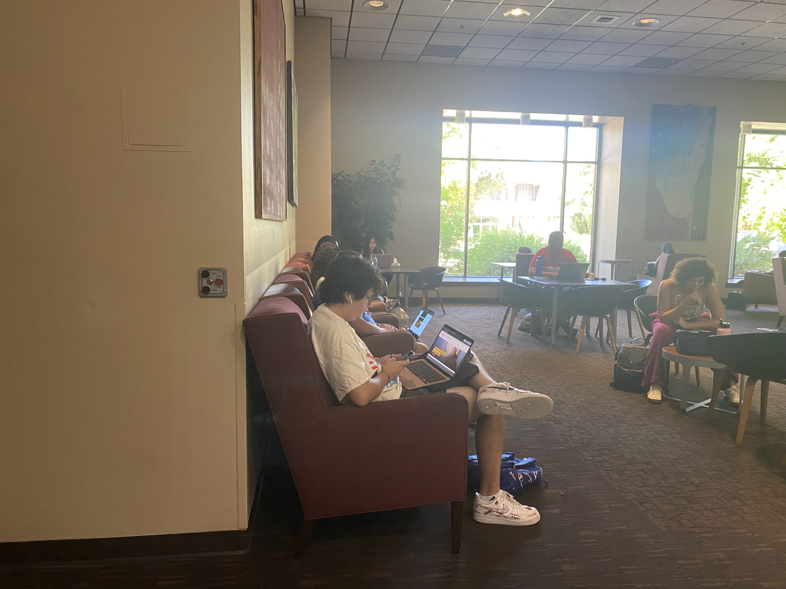
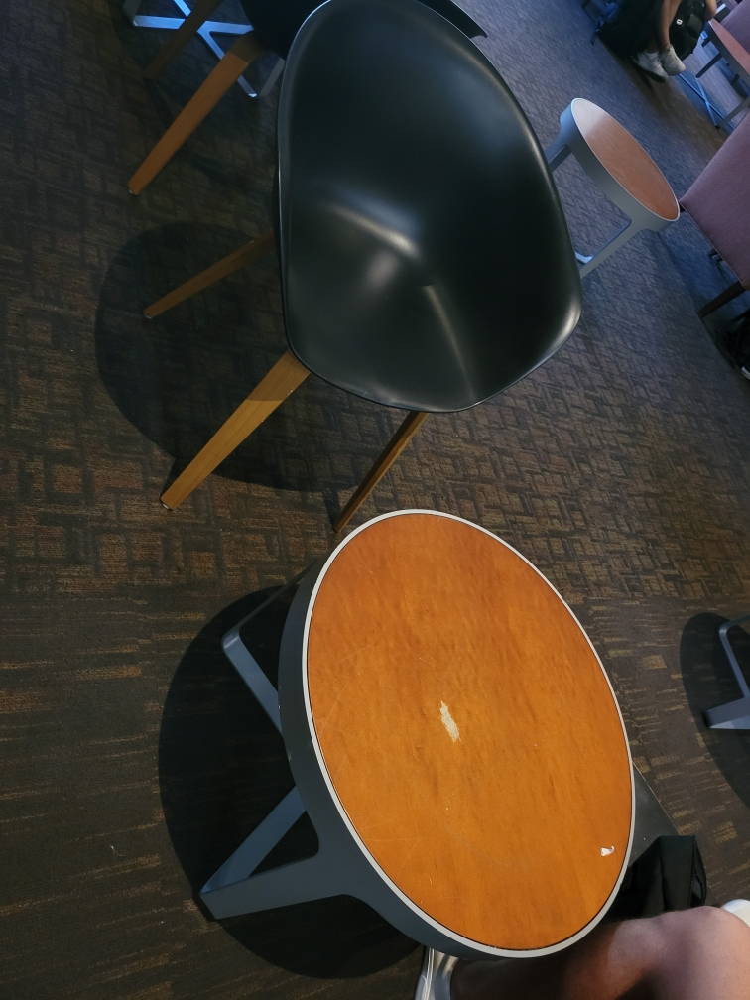

At the heart of engineering, lies the realm of problem-solving. As aspiring engineers, it is important for us to learn to practically apply concepts of engineering in solving real-life problems. As a part of our assignment, our group was assigned to look for ‘pains’ in the ‘C’ section of the Memorial Union. After looking for a long time, our team was finally able to find a big problem. I noticed that most people sitting in the lounge were keeping laptops on their laps. Previously, I had read an article on how keeping laptops on our laps is very harmful for our skin. Following up from that article, I knew that keeping laptops on our laps for prolonged periods of time could cause the ‘toasted skin syndrome’ and could potentially lead to skin cancer in some cases.
Laptops on laps.
However, this was not the only problem. Those who had access to tables were struggling with the height differences between the chairs and the tables. This could lead to back problems and tension in the spinal region, which only takes us to all other sorts of issues. By engineering a new and innovative solution for tables, we could solve two problems at once. There is no table that can be right for everyone so we started looking for adjustable solutions.
Height difference between tables and chairs.
I think that a good solution to these problems is an attached foldable table which could be opened from both the armrests on the chair. Its height could be adjusted easily and it would prevent students from causing harm to their skin. Another good feature of this solution is space-efficiency. By attaching these foldable tables, we could save a lot of space in any given room. This solution also does not require any kind of advanced and expensive technology. It instead relies on the concepts of space efficiency and accessible design. It is simple in every way and is also cheaper to build. I believe that a good solution should be effective, efficient, accessible, and affordable. The foldable tables do fulfil all these requirements which is why I chose to continue with this idea.